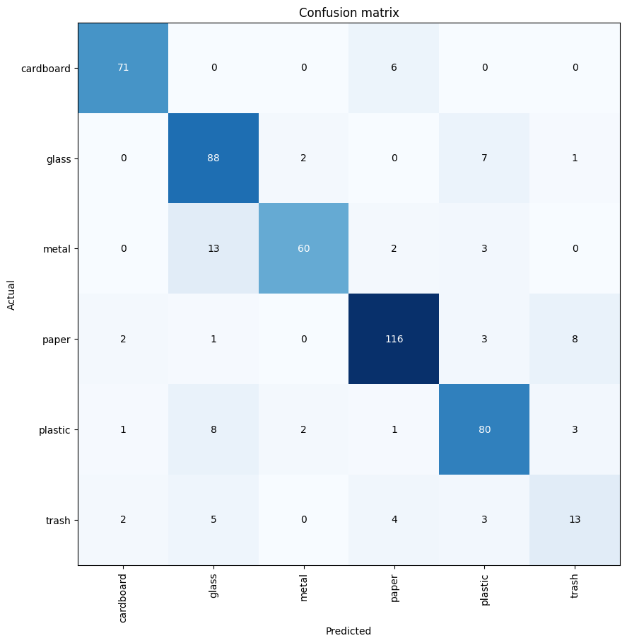
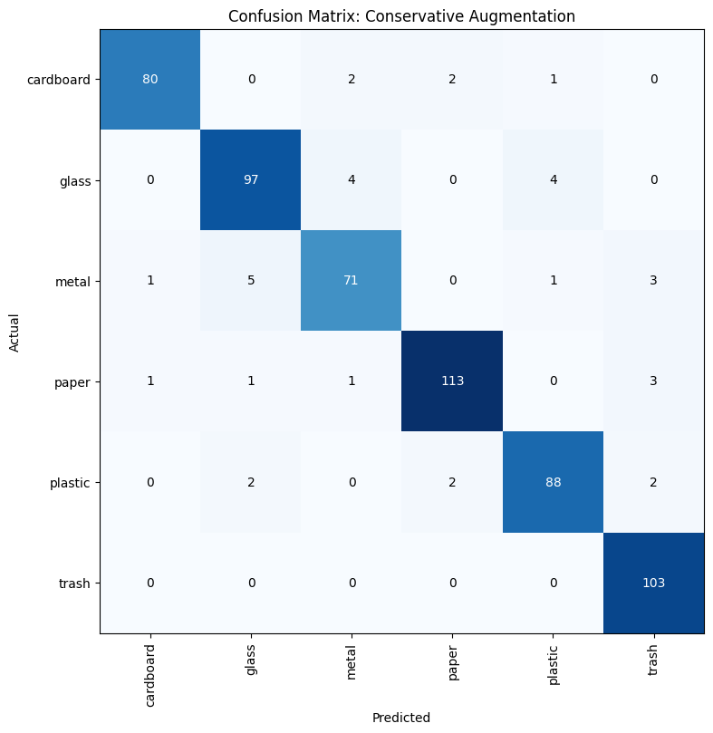
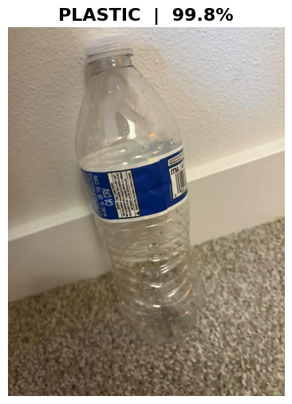

Garbage Classification Using Deep Learning
A Comparative Analysis of Class Imbalance Mitigation Strategies
DATA 5100: Deep Learning | Seattle University | Fall 2025
Executive Summary
This project develops a production-ready deep learning model for automated waste sorting, classifying garbage into six categories: paper, glass, plastic, metal, cardboard, and trash. Using transfer learning with ResNet34, we systematically compared four approaches to address severe class imbalance (4.3:1 ratio).
Key Finding
Conservative augmentation outperforms aggressive augmentation—achieving 94% accuracy with 100% trash recall while being simpler, faster, and better aligned with real-world deployment conditions.
Project Metrics
The Challenge
Severe Class Imbalance
The dataset exhibits significant class imbalance with a 4.3:1 ratio between majority and minority classes. The "trash" category contains only 137 images (5.4%), while "paper" has 594 images (23.5%).
This imbalance is critical because missing trash items means contamination in recycling streams—a real-world problem with significant environmental and economic consequences.
Class Distribution
Methodology
Base Architecture
ResNet34 with ImageNet pre-trained weights, fine-tuned for garbage classification using FastAI's transfer learning pipeline.
Four Experimental Approaches
Oversampling + Aggressive Augmentation
- Balanced to 594 images per class
- 30° rotation, 1.5x zoom
- ±40% brightness/contrast
Oversampling + Conservative Augmentation
WINNER- Balanced to 594 images per class
- 10° rotation, 1.1x zoom
- ±20% brightness/contrast
Weighted Cross-Entropy Loss Only
- Original unbalanced dataset
- Inverse-frequency weights
- Trash weight: 18.4x
Both Combined
- Oversampling + Weighted Loss
- Created "double-weighting"
- ~80x minority emphasis
Results Comparison
| Metric | Aggressive Aug. | Conservative Aug. | Weighted Loss | Combined |
|---|---|---|---|---|
| Overall Accuracy | 93.5% | 94.0% | 89.9% | 89.9% |
| Trash Recall | 100% | 100% | 70.4% | 100% |
| Plastic Accuracy | 86.2% | 93.6% (+7.4%) | 86.3% | 85.1% |
| Cardboard Accuracy | 91.8% | 94.1% (+2.3%) | 92.2% | 88.2% |
| Paper Accuracy | 95.8% | 95.0% | 94.6% | 87.4% |
Model Performance Visualizations
Baseline Model Confusion Matrix

Initial baseline model (84.7% accuracy) showing class-wise performance before optimization.
Best Model: Conservative Augmentation

Final model achieving 94% accuracy with perfect trash detection (100% recall on minority class).
Real-World Validation
Testing the model on external images not seen during training to validate generalization:

Plastic bottle - 99.8% confidence
The model correctly classifies real-world images with high confidence, demonstrating strong generalization beyond the training distribution.
Key Findings
Conservative Beats Aggressive
Simpler augmentation (10° rotation vs 30°) preserves visual features better, achieving higher accuracy while being faster to train.
Double-Weighting Problem
Combining oversampling + weighted loss creates multiplicative (not additive) emphasis: 4.3x × 18.4x = ~80x, causing over-fitting.
Weighted Loss Alone Fails
Only 70.4% trash recall—missing 30% of trash items is unacceptable for recycling operations. Oversampling is essential.
Domain-Aligned Parameters
Conservative parameters match real sorting facilities: controlled lighting, items rarely rotate beyond 15° on conveyor belts.
Deployment Recommendation
Deploy Approach 2: Conservative Augmentation Model
Expected Business Impact
- 94% accuracy vs. 80-85% human baseline (+9-14% improvement)
- Zero trash contamination in recycling streams
- 60% potential labor cost reduction through automation
Live Demo
Try the model yourself! Upload any garbage image to see real-time classification.
Powered by Hugging Face Spaces | Model: ResNet34 with Conservative Augmentation
Technologies Used
Project Resources
Contact
Email: dnguyen44@seattleu.edu
LinkedIn: https://www.linkedin.com/in/duwe-ng/